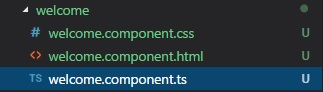
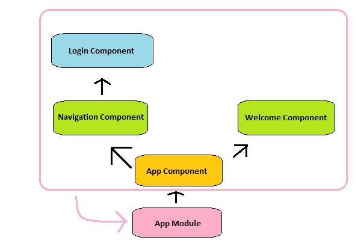

We have our stock app that was created using ng-new. Let's go over the process of creating some more components and starting creating our tree.
We will create a Welcome component and a navigation component that will be direct children of the App component, and then a Login component that is a child of the Navigation component. Let's focus on creating the welcome component first.
First things first, we created our files in a new folder. You should never have files for multiple components in the same folder. We have our TS file that will contain our component instructions, and the HTML and style sheet that we will link to.
Let's make sure our HTML has something in it so we can make sure our component is displaying correctly.
welcome.component.html
<h2>This is my welcome component</h2>
Now that we have our html all set, let's start building our our component instructions inside the TS file. Refer to the previous lesson if you need a refresher on all the pieces.
We start with our imports. We definitely need Component from @angular/core, since that gives us access to our decorator. Therefore, our welcome.component.ts starts as so:
import { Component } from '@angular/core';
Importing Component will now give us access to the @Component({}) decorator, so let's use it. Remember that we designate the custom tag with the selector property, and link our html and style sheets with the templateUrl and styleUrls properties respectively.
import { Component } from '@angular/core';
@Component({
selector: 'app-welcome',
templateUrl: './welcome.component.html',
styleUrls: ['./welcome.component.css']
})
With our files linked, we need to create our class and export it.
import { Component } from '@angular/core';
@Component({
selector: 'app-welcome',
templateUrl: './welcome.component.html',
styleUrls: ['./welcome.component.css']
})
export class WelcomeComponent { }
With our component made, we have two things left two do. Your VS Code may already be warning you about one of them: we need to add this component to our app.module. Remember that the app module will contain instructions for everything used on our app, so we will need to add our component by importing it and adding to the declarations.
We've created our component, enabled it for use in the module, but we have one last step. We have to place our component somewhere in order to display it. But where does it go? How do we place the component?
If you look at our goal, you can see that the welcome component is a child of the AppComponent, so we will be putting our component in there. But what do we put? Was there something in our component instructions that designated how we call it? You may have guessed it: it's what we put in that components decorator under selector. In this components case, it is app-welcome. Therefor our app.component.html should look like this.
<div>
<app-welcome></app-welcome>
</div>
Is there a reason you wrapped that component in a div?
It's good practice, and allows me to manipulate how a component will display stylistically on the DOM. If I want a component to take up half the screen, I can target that div in my styles.
Now if you fire up our app, you should see the html inside our welcome component.
I went ahead and repeated the process for our navigation component, leaving our app.component.ts to look like this.
<div>
<app-navigation></app-navigation>
<app-welcome></app-welcome>
</div>
Last up is our login component, which we see if a child of the navigation component. I sense a question coming...
Should I put my login folder insider the navigation folder?
It's actually a very good question. If we want our file structure to mirror our html structure, then the answer would be yes. But if you didn't want to and just wanted to make a login folder next to our welcome component, that's okay too, it's really personal preference. As long as you don't have files for multiple components in one folder, its techinically okay, but keep the following in mind: Most of your projects are going to be quite big and have a lot of components and if those components aren't organized well, your structure gets very unreadable, very fast
This would be a good point to direct you to the Angular Style Guide written by John Papa for best practice with this, or any sort of thing. This page may make more sense as you get more familiar with Angular's feature, but there is plenty of good info here.
In this example, I am not going to put it inside the navigation folder because while it is a child of that component, I do not see it as a direct feature of our navigation. Also, because I tend to find any login and authentication stuff rather important, I like to give it its own folder.
I do not, however, get to choose where I put the login component's selector. Because that is a direct child of NavigationComponent, I must put a components selector inside the html of it's parent, which in our case, is NavigationComponent. So our navigation.component.html looks like this:
<div>
<app-login></app-login>
</div>
Here's another chart explaining the layout of our components as they are now:
Now that we have our components, next lesson let's talking about preparing our nav-bar utilizing interfaces